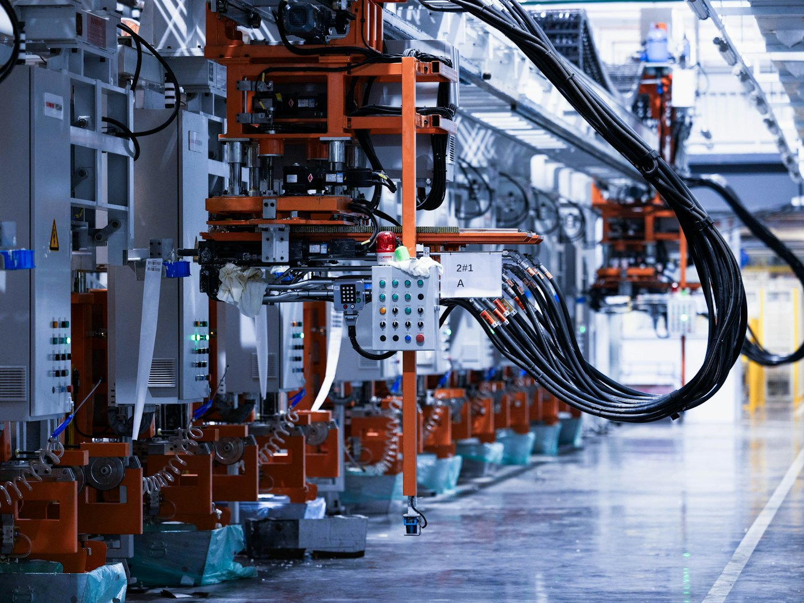

Everything your company has learned, in one place.
Reports, notebooks, instrument data, meeting notes and old decisions. Fermata reads them, links them and keeps them current. Every line points back to its file.
Reading the company’s records
SLIDESDrying review · Mar 2026R&D · 24 slidesReading…Linked to 6
NOTEBOOKLab notebook, p. 38–42R&D · notebookReading…Linked to 4
CSVBench cycling results 2026R&D · 1,840 rowsReading…Linked to 5
LOGPilot line maintenance 2026Pilot · 212 entriesReading…Linked to 9
CSVMoisture QC log 2026Production · 3,107 rowsReading…Linked to 7
PDFDrying line upgrade reportProduction · Oct 2025 · 38 pagesReading…Linked to 11
02R&D
In the lab, Maya starts where the last team stopped.
Her project is a faster drying step. Before she plans a test, Fermata brings up last year’s plant trial, so she skips what already failed. Her result goes back into memory.
Faster drying stepMMaya · Lab
Directions
ADry for 8 hours instead of 12Open
BDry hotter, at 140 °COpen
From memory · Plant report, Oct 2025At 140 °C, 4 of 6 samples cracked.
CTry 125 °C. Never tested.New
FINDING8-hour drying kept more output on the bench, over the first 50 cycles.
Share with project
03Pilot
On the pilot line, the result arrives with its history.
Tom’s output fell after the switch to 8-hour drying. Fermata reads Maya’s result, the maintenance log and the plant report together, and finds why the lab and the line disagree. An independent check works it out again before anyone acts on it.
Pilot line · drying stepTTom · Pilot line
Since we moved to 8-hour drying, pilot output has dropped. Can you work out why? CSV · Pilot tests, November
Fermata
The bench test stopped at cycle 50. The loss starts later: the 8-hour rolls fall behind near cycle 245.
Independent check passed. It corrected two figures.
FINDING8-hour drying keeps about 11 points less output at cycle 300.
Share with team
04Production
Push here. Stop there.
Before anything is scaled up, the team sees every direction with its evidence, and decides. Daniel hears before his coating reaches the pilot line. The reasons go back into memory.
Electrodes teamDDaniel · Lab
T
New for you · from Tom
Tom’s finding may affect your coating. It uses the same drying step.
Add a 12-hour drying test
Team meeting, week 12 3 directions
Direction
Evidence
Decision
12-hour drying at pilot scale
Supported · checked
Push
8-hour drying for the new coating
Against at cycle 300
Stop
New raw-material batch
Not tested
Wait
Saved to memory: the decision, the reasons, who decided, and when to look again.
The next project starts where this one ended.
Acme Labs, Maya, Tom and Daniel are made up. The pilot line story follows a real Fermata session on sample records.
Industries
For teams that take chemistry from the bench to the plant.
Each industry keeps its own records and asks its own questions. The way from R&D to production is the same.
Chemicals and process
Catalysts, formulations and scale-up.
Carbon capture and CO₂ conversion
Sorbents, membranes and electrolysers.

Batteries and energy materials
Electrodes, coatings and cells.
See it work
Fermata in two minutes.
Questions
Before you start.
Does my team have to change how it works?
No. Fermata sits beside the work you already do. You ask in plain words, attach the files you have, and it reads them where they are.
Where do our files go?
They stay on your Mac. Fermata reads them there and keeps its record of the work beside them. The parts a question needs go to the AI you chose, under your own account.
Which AI does it use?
Fermata works with Claude Code or OpenAI Codex, under your own account. You choose which one in Settings.
Does Fermata make the decisions?
No. People decide. Fermata shows the evidence, says what it assumed, has its findings checked independently, and keeps the reasons for each decision.
Fermata works around your workflow. You don’t work around it.